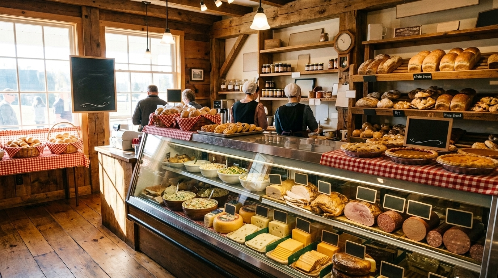
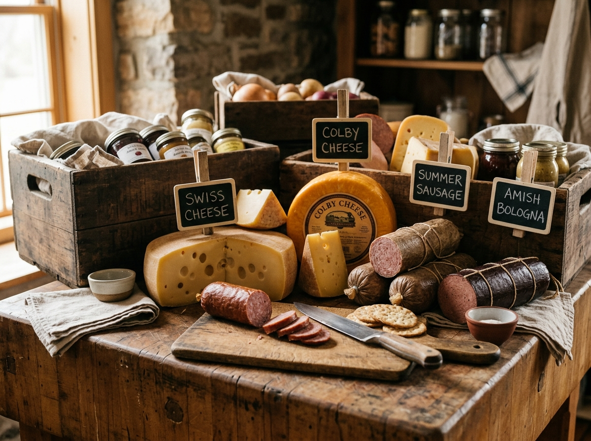
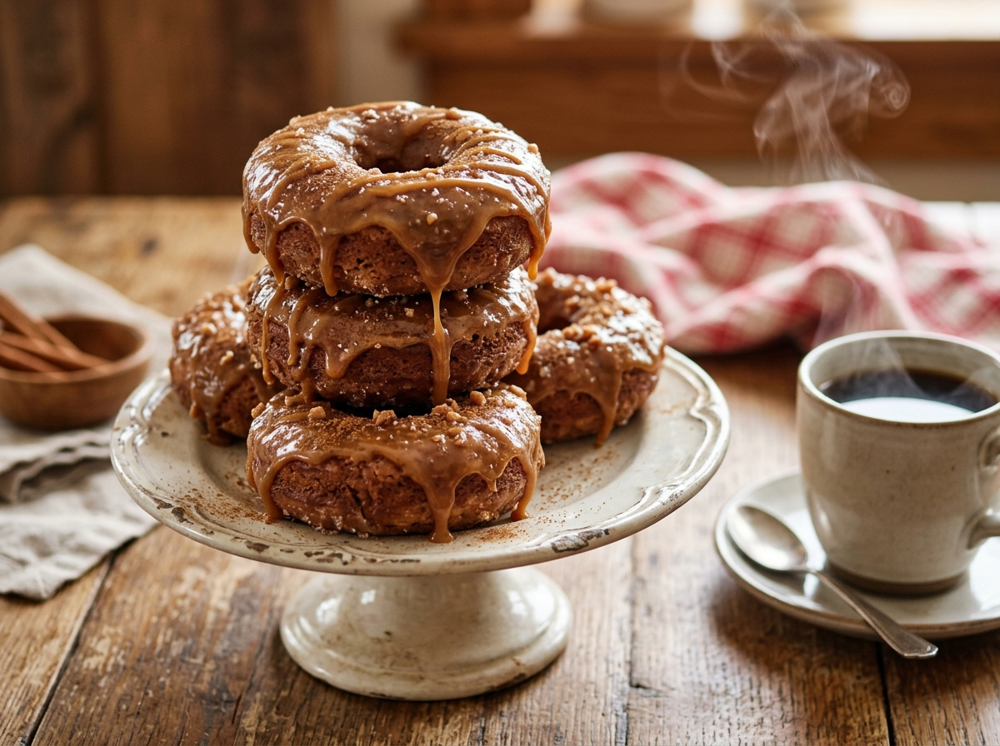
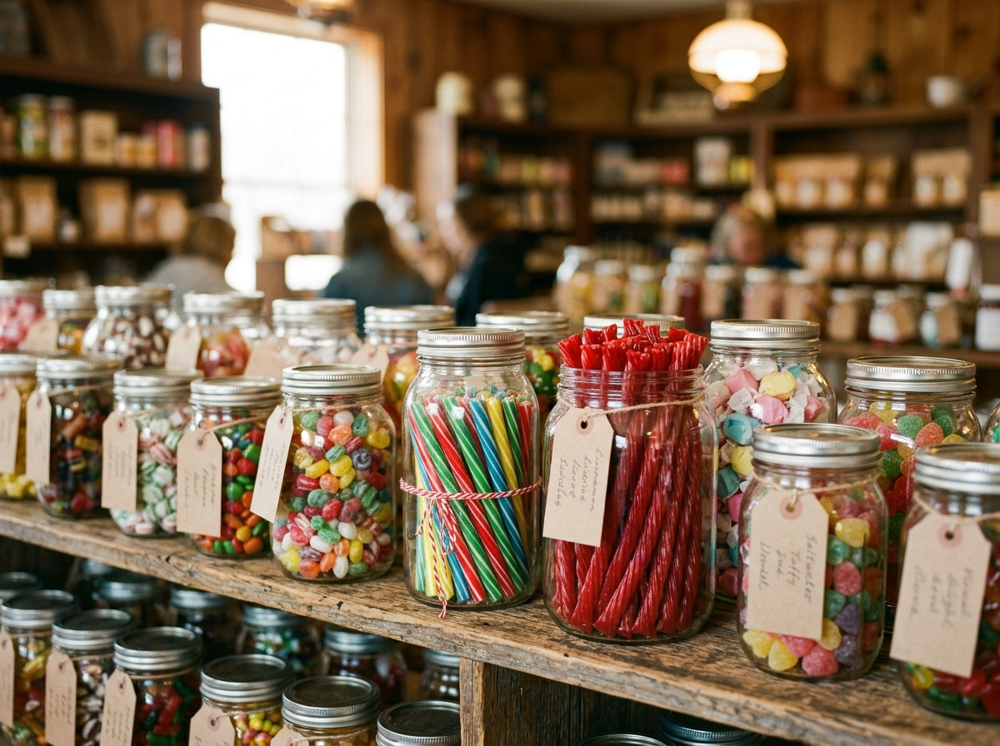
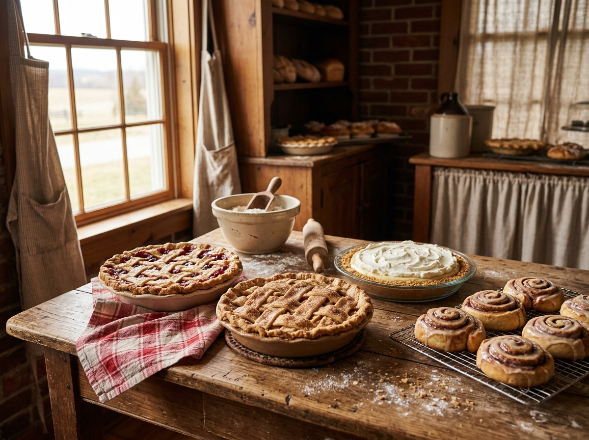
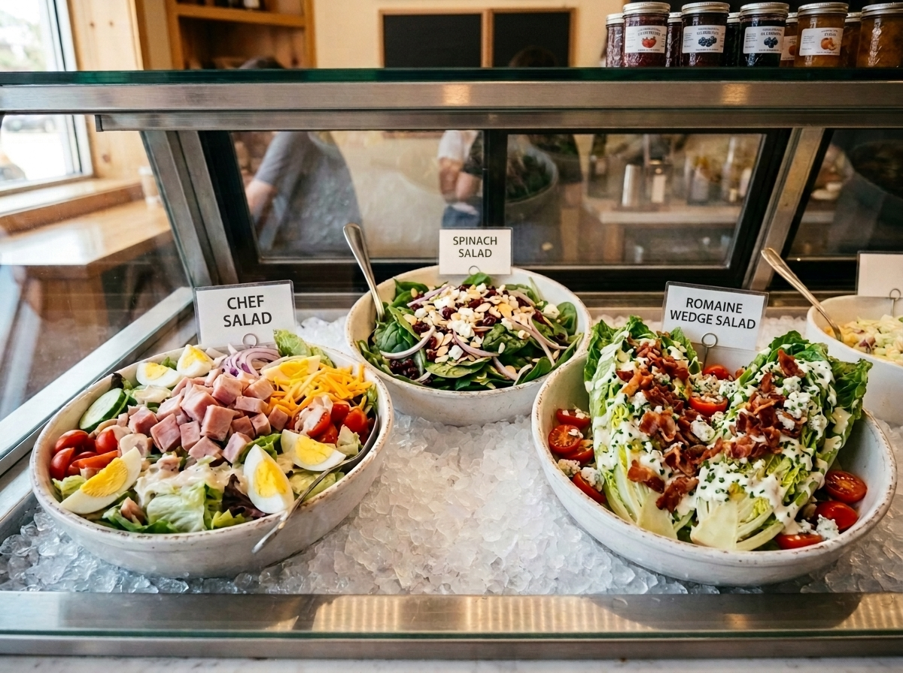

Hours Mon–Fri 7–6:30 · Sat 7:30–4 · Sun closed

Over 70 Amish meats and cheeses, donuts worth waking up early for, and smoked meats hot off the smoker Wednesday through Saturday — all from one family-run market on Leo Road.
Wednesday through Saturday
Low and slow, four days a week — sold warm and ready to carry out. Regulars know: come early, because when it's gone, it's gone.
Juicy hickory-smoked half chickens, ready at lunchtime.
Piled on a fresh bakery bun with our own BBQ sauce.
Half rack or full slab. These famously sell out — call ahead!
Big, smoky, fall-off-the-bone wings for the weekend.

The Deli Counter
Sliced to order, the old-fashioned way. From Guggisberg Swiss to sweet Lebanon bologna — a Pennsylvania Dutch favorite you won't find anywhere else in town — our counter is stocked with meats and cheeses sourced from Amish farms and smokehouses.
The Bakery
Our cinnamon caramel donuts have earned a following far beyond Leo Road — they've even been featured in Buzzfeed's "donuts to try before you die." Fresh every morning alongside pies, fried pies, cinnamon rolls, cookies, and bread still warm from the oven.

More Than a Deli
Part deli café, part old-fashioned general store — stocked with things the big stores just don't carry.

Glass jars of nostalgic favorites — including cinnamon licorice that customers say is the only place in town to find it.

Bulk baking supplies, spices, jams and jellies, homemade pasta, flavored milks, and locally sourced goods.

One of the area's largest gluten-free sections — snacks, baked goods, and specialty foods, all in one stop.
Don't Take Our Word For It
4.8 stars and hundreds of reviews across Facebook, TripAdvisor, and more.
Amazing sandwiches & deli foods... they provided lunch for over 40 university students effectively and accurately. A delicious meal with many customizations!
On Fridays Nolt's sells smoked ribs — they were excellent. Great smoky taste, and the BBQ sauce is excellent too.
Nolt's catered our wedding and it was absolutely perfect! From start to finish, everything was on time, beautifully prepared, and beyond delicious.
Have a blessed day!
It's how every visit to Nolt's ends — so it's how we'll send you off here, too.